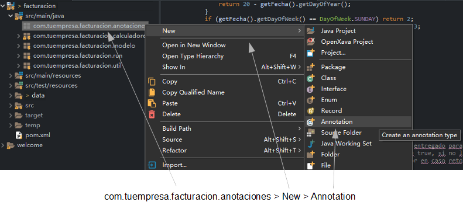
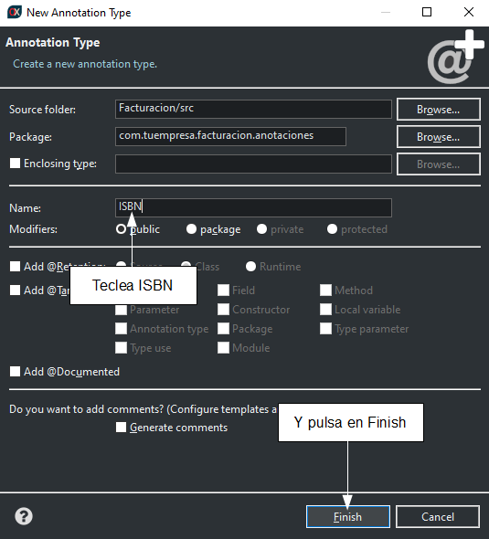

openxava / documentación / Lección 21: Anotación Bean Validation propia
Curso:
1. Primeros pasos |
2. Modelo básico del dominio (1) |
3. Modelo básico del dominio (2) |
4. Refinar la interfaz de usuario |
5. Desarrollo ágil |
6. Herencia de superclases mapedas |
7. Herencia de entidades |
8. Herencia de vistas |
9. Propiedades Java |
10. Propiedades calculadas |
11. @DefaultValueCalculator en colecciones |
12. @Calculation y totales de colección |
13. @DefaultValueCalculator desde archivo |
14. Evolución del esquema manual |
15. Cálculo de valor por defecto multiusuario |
16. Sincronizar propiedades persistentes y calculadas |
17. Lógica desde la base de datos |
18. Validando con @EntityValidator |
19. Alternativas de validación |
20. Validación al borrar |
21: Anotación Bean Validation propia |
22. Llamada REST desde una validación |
23. Atributos en anotaciones |
24. Refinar el comportamiento predefinido |
25. Comportamiento y lógica de negocio |
26. Referencias y colecciones |
A. Arquitectura y filosofía |
B. Java Persistence API |
C. Anotaciones |
D. Pruebas automáticas
En la lección anterior viste como validar al borrar. En esta lección vas a ver como crear una anotación Bean Validation propia.
Crear tu propia anotación de Bean Validation
Las técnicas mencionadas hasta ahora son muy útiles para la mayoría de las validaciones de tus aplicaciones. Sin embargo, a veces te encuentras con algunas validaciones que son muy genéricas y quieres usarlas una y otra vez. En este caso definir tu propia anotación de
Bean Validation puede ser una buena opción. Definir un
Bean validation es más largo y engorroso que lo que hemos visto hasta ahora, pero usarlo y reusarlo es simple, tan solo añadir una anotación a tu propiedad o clase.
Vamos a aprender como crear un
Bean Validation.
Usar un Bean Validation en tu entidad
Es superfácil. Simplemente anota tu propiedad como ves a continuación:
@ISBN // Esta anotación indica que esta propiedad tiene que validarse como un ISBN
String isbn;
Solo con añadir
@ISBN a tu propiedad ésta será validada justo antes de que la entidad se grabe en la base de datos, ¡genial! El problema es que
@ISBN no está incluida como un validador predefinido en el marco de validación
Bean Validation. Esto no es un gran problema, si quieres una anotación
@ISBN, hazla tú mismo. De hecho, vamos a crear la anotación de validación
@ISBN en esta sección.
Antes de nada, añadamos una nueva propiedad
isbn a
Producto. Edita tu clase
Producto y añádele el siguiente código:
@Column(length=13)
String isbn;
Ejecuta el módulo
Producto con tu navegador. Sí, la propiedad
isbn ya está ahí. Ahora, puedes añadir la validación.
Definir tu propia anotación ISBN
Creemos la anotación
@ISBN. Primero, crea un paquete en tu proyecto llamado
com.tuempresa.facturacion.anotaciones. Pulsa en él con el botón derecho del ratón y escoge
New > Annotation, como sigue:

Se mostrará un diálogo, teclea ISBN y pulsa en
Finish:

Edita el código de tu recién creada anotación
ISBN y déjala así:
package com.tuempresa.facturacion.anotaciones; // En el paquete 'anotaciones'
import java.lang.annotation.*;
import javax.validation.*;
@Constraint(validatedBy = com.tuempresa.facturacion.validadores.ValidadorISBN.class)
@Target({ElementType.FIELD, ElementType.METHOD})
@Retention(RetentionPolicy.RUNTIME)
public @interface ISBN {
Class<?>[] groups() default{};
Class<? extends Payload>[] payload() default{};
String message() default "isbn_invalido"; // Id del mensaje en el archivo i18n
}
Como puedes ver, es una definición de anotación normal y corriente. El atributo
message es el mensaje a mostrar al usuario si la validación falla, puedes escribir el mensaje tal cual o poner un identificador i18n. El desarrollador puede especificar su propio mensaje cuando use la anotación, aunque nosotros proveemos unos por defecto, "isbn_invalido", por lo que hemos de añadir la siguiente entrada en facturacion-messages
_es.properties:
isbn_invalido=ISBN inválido o inexistente
@Constraint indica la clase con la lógica de validación. Escribamos la clase
ValidadorISBN.
Usa Apache Commons Validator para implementar la lógica
Vamos a escribir la clase
ValidadorISBN con la lógica de validación para un
ISBN. En lugar de escribir nosotros mismos la lógica para validar un
ISBN usaremos el proyecto
Commons Validator de Apache. Commons Validator contiene algoritmos de validación para direcciones de correo electrónico, fechas, URL y así por el estilo. El
commons-validator.jar se incluye por defecto en los proyectos OpenXava, por tanto lo puedes usar sin ninguna configuración adicional.
El código para
ValidadorISBN lo puedes ver a continuación:
package com.tuempresa.facturacion.validadores; // En el paquete 'validadores'
import javax.validation.*;
import com.tuempresa.facturacion.anotaciones.*;
import org.openxava.util.*;
public class ValidadorISBN implements ConstraintValidator<ISBN, Object> {
private static org.apache.commons.validator.routines.ISBNValidator
validador = // De 'Commons Validator'
new org.apache.commons.validator.routines.ISBNValidator();
public void initialize(ISBN isbn) {
}
// Contiene la lógica de validación
public boolean isValid(Object valor, ConstraintValidatorContext contexto) {
if (Is.empty(valor)) return true;
return validador.isValid(valor.toString()); // Usa 'Commons Validator'
}
}
Como ves, la clase validador tiene que implementar
ConstraintValidator del paquete
javax.validation. Esto fuerza a tu validador a implementar
initialize() e
isValid(). El método
isValid() contiene la lógica de validación. Fíjate que si el elemento a validar está vacío asumimos que es válido, porque validar si un valor está presente es responsabilidad de otras anotaciones, como
@Required, y no de
@ISBN.
En este caso la lógica de validación es sencillísima, porque nos limitamos a llamar al validador ISBN de Apache Commons Validator.
@ISBN está listo para usar. Para hacerlo anota tu propiedad
isbn con él. Puedes ver cómo:
@Column(length=13) @ISBN
String isbn;
En este caso cuando grabes la clase el import para
@ISBN no se añade automáticamente. Esto es porque hay otra
@ISBN disponible (de la librería Hibernate Validator incluida con OpenXava), por tanto OpenXava Studio no sabe cual escoger. No te preocupes, pon el ratón sobre la anotación
@ISBN y una ventana emergente se mostrará con varias soluciones posibles, escoge
Import 'ISBN' (com.yourcompany.invoicing.annotations) para que el import correcto se añada a la clase
Producto:

Ahora, puedes probar tu módulo, y verificar que el
ISBN que introduces se valida correctamente. Enhorabuena, has escrito tu primer
Bean Validation. No ha sido tan difícil: una anotación, una clase.
Este
@ISBN es suficientemente bueno para usarlo en la vida real, sin embargo, vamos a mejorarlo un poco más y así tendremos la posibilidad de experimentar con algunas posibilidades interesantes.
Resumen
¡Enhorabuena! Has aprendido como crear tu propia anotación de Bean Validation. En la siguiente lección aprenderás a como llamar a un servicio REST desde una validación.